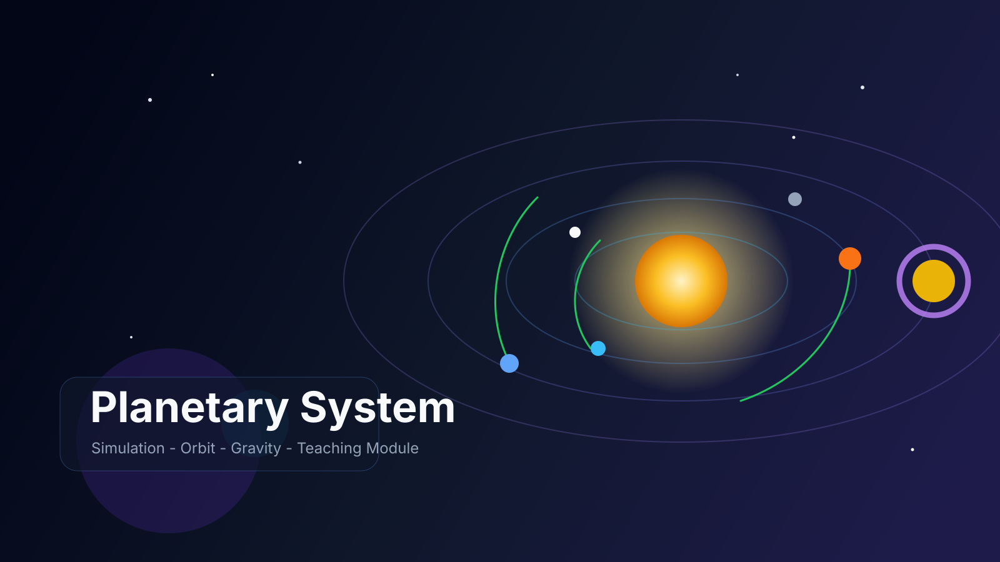
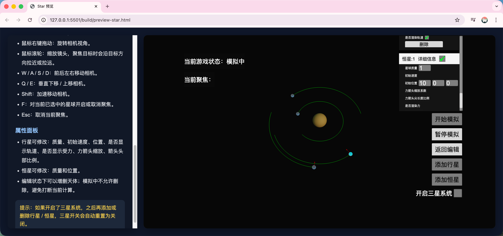
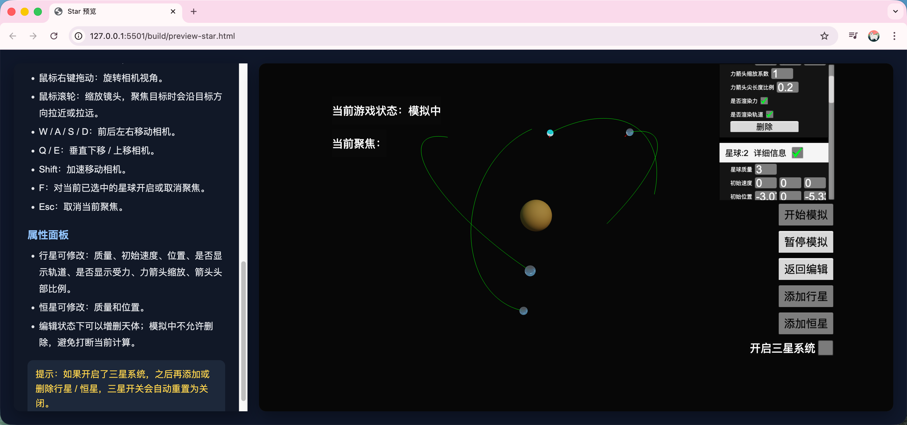
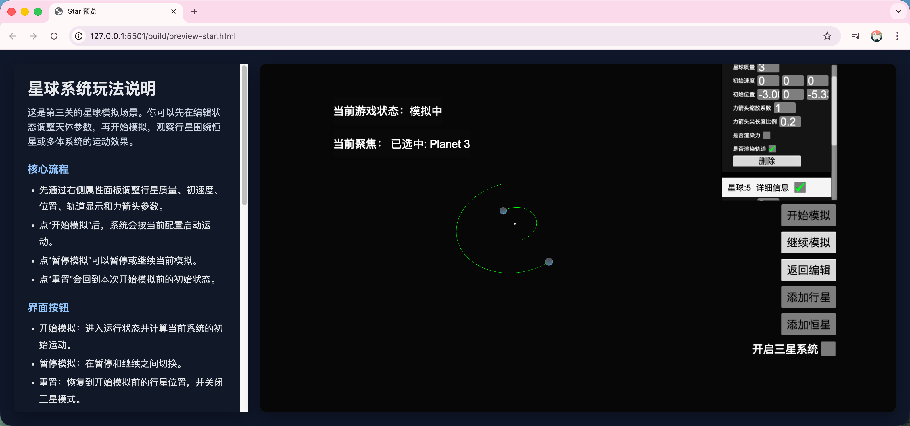
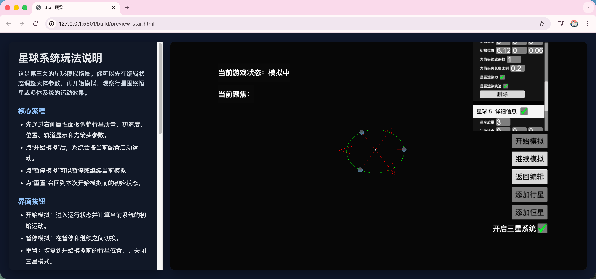
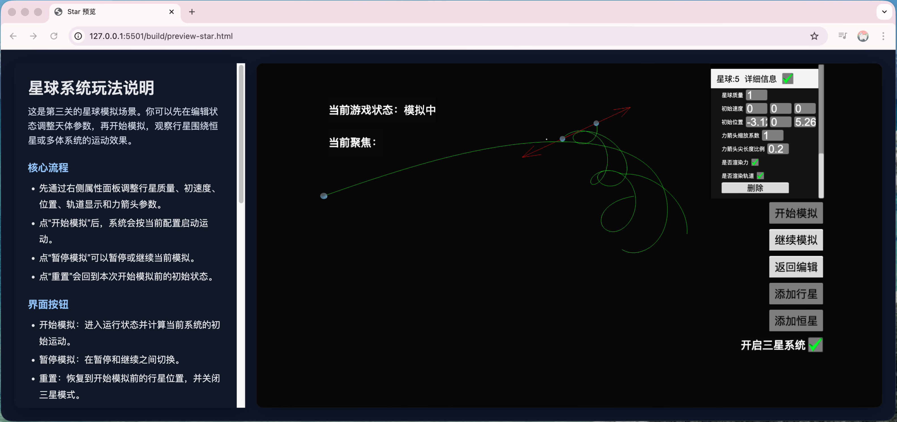

行星系统开发总结
Cocos Creator 三维物理教学模块 | 2026/04 | 系统设计与实现复盘

系统概述
这个行星系统不是单纯的“轨道动画演示”，而是集成在 Cocos Creator 项目里的可编辑、可模拟、可观察、可交互的三维物理教学模块。它一方面承担课堂演示和答辩展示的视觉表达，另一方面也保留了参数调整、轨道生成、聚焦观察和状态重置等工程能力。
设计目标并不是追求天文学意义上的高精度仿真，而是优先保证可理解性、可调试性、可演示性和实时性能。因此整套系统围绕服务层统一管理、组件自注册、事件驱动 UI 和控制器驱动相机来组织。
总体架构
-
启动与服务注册层：在游戏启动时注册 `PlanetService`，保证行星系统有唯一的物理核心实例。
-
物理仿真核心层：由 `PlanetService` 统一管理天体注册、引力计算、固定步长积分、质心和重置逻辑。
-
天体实体层：`BallItem`、`PlanetItem`、`StarItem` 承载单个天体的质量、速度、受力、可视化和碰撞状态。
-
UI 与观察层：`PlanetUI`、`PlanetPropertyItem`、`FreeCameraController`、`SkyController` 负责参数面板、按钮控制、聚焦观察和每帧驱动。
核心技术要点
物理仿真核心
以 `PlanetService` 为统一服务层实现引力计算和天体运动模拟，采用固定步长积分器配合时间累加器推进物理状态，避免帧率波动导致轨道不稳定。支持恒星-行星系统、双星绕质心、三星平衡/不平衡等多种引力构型，可自动计算圆轨道初速度保证演示效果稳定。
天体实体管理
通过 `BallItem` → `PlanetItem` / `StarItem` 的继承层级实现代码复用，所有天体组件在 `onLoad` 时自动注册到服务层，销毁时自动注销，无需外部手动维护列表。每个天体独立维护质量、速度、受力状态和可视化表现。
交互与观察系统
`PlanetUI` 提供全局参数面板，`PlanetPropertyItem` 负责单颗天体的属性编辑，两者均通过事件驱动与服务层解耦，监听 `PlanetUpdated`、`FocusPlanetChanged` 等事件更新界面。`FreeCameraController` 实现自由视角和聚焦观察两种相机模式，`SkyController` 每帧驱动物理更新和渲染同步。
架构设计特点
服务层作为唯一真相源集中管理所有全局状态，组件自注册机制减少手动维护成本，事件驱动 UI 保证逻辑与表现分离，固定步长物理积分确保仿真稳定性，整体设计兼顾教学演示的可理解性和工程实现的可扩展性。
实现重点与展示资源
下面这组截图直接来自你当前的行星系统运行界面。我按照图片名称去组织说明，让每一张图都对应一个明确的系统现象或演示场景，方便在作品集和答辩里直接引用。

`二维恒星轨道`：展示在恒星作为引力中心时，多个行星在同一平面内形成较稳定的环绕轨道，适合说明自动圆轨道初速度和二维教学演示模式。

`多维恒星轨道`：展示带有空间高度差和更复杂初速度分量时的三维轨道表现，用来说明系统并不局限于二维平面，而是支持更自由的轨迹观察。

`双星系统`：展示无恒星条件下两颗行星围绕共同质心运动的效果，对应文档里“双体初始速度生成”和质心运动的教学场景。

`平衡三星系统`：展示开启三星模式后，三颗行星在等角布局下形成相对平衡的运行状态，适合说明编辑器辅助布局和三星初值策略的效果。

`不平衡三星系统`：展示三星参数不平衡时轨迹快速发散、偏离稳定构型的现象，可用于说明系统稳定性边界，以及为什么需要合理的初始条件和质心约束。
流程图展示
下面这组流程图直接接入了你整理的 Mermaid 代码，用来把行星系统的整体架构、启动流程、物理更新、UI 交互和相机聚焦逻辑可视化展示出来，方便答辩、讲解和后续交接。
系统总体架构图
这张图对应文档里“服务层统一管理 + 组件自注册 + 事件驱动 UI + 控制器驱动相机”的总体思路。核心点在于 `PlanetService` 处于中心位置，实体层、UI 层和相机控制层都围绕它协作，而不是彼此直接耦合。
启动初始化流程
这里重点说明行星系统并不是孤立脚本，而是通过 `startboot` 和 `LogicSystem` 作为正式模块接入主工程。场景进入后，天体组件自动注册到服务层，UI 和渲染驱动再分别完成各自初始化。
行星系统运行流程
这张图把“编辑态配置”到“运行态模拟”的全过程串起来了。它说明开始模拟时不仅仅是切换状态，还会根据恒星、双星或三星模式生成更合理的初始速度，再进入持续的物理推进和可视化更新。
固定步长与 Verlet 更新
这一段解释的是为什么系统没有直接用逐帧 `dt` 做欧拉积分，而是采用累加器配合固定步长的 Velocity Verlet 方案。它能显著降低帧率波动对轨道结果的影响，让不同机器上的演示更稳定。
UI 与事件交互流程
这里强调的是 UI 和逻辑层并不是直接互调，而是通过事件系统完成同步。位置修改、重置和状态刷新都先经过事件广播，再由 `PlanetService` 统一处理，这样面板、服务层和实体组件之间会更容易维护。
相机选择与聚焦流程
这部分说明玩家如何从“点击选中某颗行星”过渡到“相机围绕目标观察”。射线拾取、选中特效、焦点更新和 LookAt / Follow 两种聚焦模式都在同一条链路里完成，便于演示交互观察能力。
重置流程
重置并不是简单把节点瞬移回原位，而是完整恢复一轮模拟的初始状态，包括速度、轨迹、质心节点和三星模式。这样可以保证重新开始时，系统状态和界面表现保持一致。
系统信息
系统定位
可编辑、可模拟、可观察的三维物理教学模块
核心技术
Cocos Creator / TypeScript / 事件驱动 UI / 固定步长积分
主要用途
教学可视化、答辩汇报、系统演示、后续重构交接
相关文档
images/planetary-system/行星系统开发总结.md
images/planetary-system/行星系统流程图代码.md
核心模块
-
PlanetService：统一管理天体、引力、积分推进、质心与重置。 -
PlanetItem / StarItem / BallItem：承载实体状态并完成自注册。 -
PlanetUI / PlanetPropertyItem：负责参数面板、按钮和状态同步。 -
FreeCameraController / SkyController：处理相机控制、拾取聚焦和运行时驱动。
当前优点与边界
优点：架构层次清晰，物理推进比常见演示脚本更正规，并且支持轨迹、受力、质心和相机聚焦等教学可视化功能。
优点：编辑器友好，支持无恒星双体、三星等角布局，以及不同模式下的起始速度自动生成。
边界：有恒星时忽略行星间相互引力，恒星本身不参与动态运动，碰撞仍采用“碰撞即停”的简化策略。
边界：通用 N 体初值生成仍不完整，部分字段命名与实现细节还有继续清理和统一的空间。